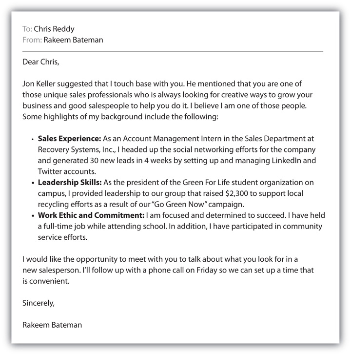

Did you know that 80 percent of jobs are filled through networking?Kim Richmond, Brand You, 3rd ed. (Upper Saddle River, NJ: Pearson Prentice Hall, 2008), 171. Networking is sometimes referred to as the “hidden job market” because many jobs are filled before they are ever posted. This is true now more than ever because of the challenging economy. Traffic at job boards like Monster.com, CareerBuilder.com, and Yahoo! HotJobs is up 37 percent over last year, which means that companies are deluged with résumés. Despite the influx in résumés, companies are using more networking—traditional and online—to fill their open jobs. In fact, about 50 percent of Facebook’s new hires come from referrals from existing employees. According to Molly Graham, manager of Facebook Human Resources and Recruitment, “One of our main philosophies is to get smart and talented people. They tend to be connected.”
Zappos, a billion-dollar online retailer of shoes and apparel that was recently purchased by Amazon, has taken employee referrals to the next level and has implemented software that lets employees use their LinkedIn and Twitter contacts. The software uses an algorithm to identify people who might have a skill set and experience match for open positions and then allows employees to invite the prospective candidate to apply.Joseph De Avila, “Beyond Job Boards,” Wall Street Journal, July 2, 2009, http://online.wsj.com/article/SB10001424052970203872404574260032327828514.html (accessed July 3, 2009).
So now you can see why networking can be a very effective method to potentially learn about or land the job you want. But you might be wondering where you start and exactly how you network effectively. Like everything else in selling, you need to develop a plan.
Before you start, it’s a good idea to review exactly what networking is and what it isn’t. Just as in selling, networking is about building relationships that are mutually beneficial; it is about the exchange of value between people, usually over the course of time. Someone might help you now, and you might help that same person or someone else later. It requires a relationship and ongoing commitment. Networking isn’t a quick, easy way to get a job. Although it can be instrumental in helping you get a job, it isn’t easy, and it might not be quick. You should approach networking for the long term and realize that you will help some people and some people will help you. You have the power to help other people and to ask for help; that’s how networking works. To help guide you, here are six power networking tips.
Don’t think of networking as begging for a job. Start building relationships with people—family, friends, professors, and executives—now. That will give you the opportunity to build relationships and potentially help someone even before you begin your job search. When you do begin networking to find a job, be yourself and get to know as many people as possible using the methods described earlier in the chapter (e.g., professional organizations, events). Keep in mind that you may have the opportunity one day to help the person with whom you are networking, so network with confidence.Meredith Levinson, “How to Network: 12 Tips for Shy People,” CIO, December 11, 2007, http://www.cio.com/article/164300/How_to_Network_Tips_for_Shy_People?page=1 (accessed July 3, 2009). You will be surprised at how many people are willing to help you because you ask. The fact is people want to help you; they want to see you succeed.
There’s no better place to meet people you want to work with than to go where they go. Professional organizations such as your local chapter of Sales & Marketing Executives International, American Marketing Association, Entrepreneurs Organization, Public Relations Society of America, and others provide the perfect environment to meet people in the industry in which you want to work. Start by exploring the professional organizations on campus. Many are local chapters of national organizations designed to encourage students to get involved. If you don’t know which organization is best for you, ask a professor; she will be happy to provide some insight. Or go to a meeting and check it out; most organizations allow nonmembers to attend at least one meeting or event at no charge. A good number of professional organizations offer student membership rates that are designed for student budgets. Besides providing an excellent method to network, being a member of a professional organization also enhances your résumé.
But don’t just join—get involved. You can impress people with your skills, drive, and work ethic by getting involved in a committee, planning an event, working on the organization’s Web site, or other project. It’s a great way to build your experience and your résumé and impress prospective employers. At the same time, you can be developing professional references to speak on your behalf.
Networking, like selling, is personal. So make a list of all the people you know with whom you can network. Don’t disqualify anyone because you think they can’t help. You never know who knows someone who might be the link to your next job. Follow the same strategy for your personal networking as you would use for networking for selling: write down the four Fs—friends, family, friends’ family, and family’s friends using a format like the example shown in Table 3.2 "Sample Networking List".Howcast, “How to Network,” video, http://www.youtube.com/watch?v=Y9VUqB7wQpY (accessed July 27, 2009). But don’t stop there; include your manicurist, insurance agent, hairstylist, and anyone else with whom you have a relationship. Don’t forget to visit your school alumni office. It’s always easier to start networking with people with whom you already have a relationship.
Table 3.2 Sample Networking List
| Name | Relationship | Phone | Date of Contact | Follow-Up Date | |
|---|---|---|---|---|---|
| Manny Romeo | Dad’s friend at Crane, Inc. | mromeo@craneinc.com | 616-787-9121 | March 4 | Need to touch base again at end of the month |
| Marie Jennings | Mom’s friend | mmjennings@comcast.net | 616-231-0098 | March 6 | Early April (April 6) |
| Jamal Isper | Dad’s friend at Polk & Polk | jasper@polk.com | 791-887-9091 | March 10 | March 17 |
| Shalee Johnson | Hairstylist | Not available; will talk to her on my next appointment | 616-765-0120 | April 7 | To be determined based on first contact |
| Rajesh Sumar | Director of Alumni Relations at school | Rajesh.sumar@university.edu | 891-222-5555 ext. 2187 | March 12 | To be determined based on first contact |
| Annette Roberts | General Sales Manager, Castle Controls | Annette.roberts@castle.com | 888-989-0000 ext. 908 | March 12 | To be determined based on first contact |
Networking Made Easy
(click to see video)This video gives you the highlights of how to network.
Source: Howcast Media, Inc.
Everyone tells you to do networking, but after you create your list, what do you say? You will be delivering your brand message to everyone with whom you are networking, so be specific about what you are looking for. Always take the opportunity to expand your network by asking for the names of other people whom you might contact. For example, assume you are networking with Vera, a friend of the family:
| You: | I really enjoy marketing and advertising. In fact, I’m looking for an internship at an advertising agency in account management. Do you know of anyone who might be looking for an intern for the summer? |
| Vera: | I don’t really know anyone at an advertising agency. |
| You: | Thanks. I was wondering if you might know anyone who might know someone who works at an advertising agency. |
You will be surprised at how many people may be able to give you the name of someone you can contact. Not everyone will give you a name, but if you don’t ask, most people won’t think about whom they might know.
You might also network with someone who gives you the name of someone to contact. For example,
| You: | I’m going to graduate from State College in May with a degree in business administration. I really enjoy the idea of helping people increase their company’s sales, so I’m looking for a job in selling. Do you know of anyone who might have an opportunity in sales? |
| Jon: | Have you talked to anyone at Universal Parts? They have a great training program, and the sales reps get a company car. You might want to touch base with Chris Reddy, who is one of the sales managers. I can give you his contact information. |
| You: | Jon, I really appreciate your help. Can I mention your name when I contact him? |
| Jon: | Sure. Chris is a great leader and is always looking for good people. |
When you contact Chris Reddy, it’s best to make contact by phone, if possible. That way you have an opportunity to create a relationship (remember how important relationships are in selling, especially when you are selling yourself). A phone call might start like this:
| You: | Hello, Chris. My name is Rakeem Bateman. Jon Keller suggested I give you a call. |
| Chris: | Hello Rakeem. Jon and I have known each other for several years. How do you know Jon? |
| You: | I met him at a Sales & Marketing Executives International event last week. He was one of the speakers. I enjoyed hearing what he had to say so much that I stayed to talk to him after the event. I’m going to graduate from State College in May with a degree in business administration. I really enjoy the idea of helping people increase their company’s sales, so I’m looking for a job in selling. Jon suggested that I touch base with you to find out if Universal Parts might be looking to expand their sales organization. |
If someone has referred you, always include that as part of your introduction. If your networking takes place via e-mail, you should do the same thing. When you send your résumé to someone with whom you are networking via e-mail, it’s best to include your three bullet points from your cover letter as the body of the e-mail (review the Selling U section in Chapter 2 "The Power to Choose Your Path: Careers in Sales"). That allows the person to whom you are sending the letter to see at a glance that he wants to open your résumé. In most cases the person to whom you are sending your résumé is forwarding it to someone else. Writing a short, easy-to-skim note helps tell every recipient what you have to offer. For example, see Figure 3.5 "Sample E-mail for Networking" for a sample e-mail to Chris Reddy.
Figure 3.5 Sample E-mail for Networking
You can see that when you are networking you want to focus on being specific about what you are looking for, asking for names of people with whom you might network, and creating a relationship with those people.
Social networking sites can be a more powerful job search tool than most people realize, and their power can go both ways: The sites can work in your favor, but they can also work against you. When you’re preparing to apply for jobs, keep in mind that a growing number of employers search social networking sites like Facebook and MySpace to weed out applicants who might not fit with their company culture. In fact, 22 percent of employers claim to use social networking sites when considering potential hires, and of those employers, 34 percent said they chose not to hire a candidate based on the information they had dug up about that person online.Mike Hargis, “Social Networking Sites Dos and Don’ts,” CNN.com, November 5, 2008, http://www.cnn.com/2008/LIVING/worklife/11/05/cb.social.networking/index.html (accessed May 16, 2010). One human resources manager based in Seattle, says she has turned down an otherwise promising job candidate’s application on a number of occasions after visiting the applicant’s networking profile. “Sometimes there are compromising photos or videos posted out there where anyone can find them,” she says. “When that happens, those applications go right in the trash.”Elizabeth Lee, personal communication, June 26, 2009. You can find out all kinds of things about a person from his MySpace profile that you couldn’t necessarily learn from his cover letter or résumé! As social networking expert Patrice-Anne Rutledge says, before you go on the job market, make sure you “get rid of your digital dirt.” In particular, look through any videos or photographs you may have uploaded to your profile, any Web sites you may have linked to, and any personal information you reveal that may be controversial or reflect on you in a negative light.Mike Hargis, “Social Networking Sites Dos and Don’ts,” CNN.com, November 5, 2008, http://www.cnn.com/2008/LIVING/worklife/11/05/cb.social.networking/index.html (accessed June 25, 2009).
Clean Up Your Pages
“Get rid of your digital dirt”Mike Hargis, “Social Networking Sites Dos and Don’ts,” CNN.com, November 5, 2008, http://www.cnn.com/2008/LIVING/worklife/11/05/cb.social.networking/index.html (accessed June 25, 2009). now, before you even start applying for jobs. Your Facebook or MySpace profile could negatively impact your chances of getting a job at your chosen company. Gauge the appropriateness of the videos, photographs, and comments on your pages and decide whether it would be a problem if a potential employer saw them. Many employers will search your social networking profiles to learn the things your résumé and cover letter don’t reveal.
On the other hand, professional social networking sites are tools you can leverage to great advantage in your job search if you use them proactively. LinkedIn is the biggest and most frequently used networking site, but there are a number of others, including Jobster, Ryze, ZoomInfo, and Plaxo, that allow you to create a professional profile and find contacts in your target industry or at target companies.Kim Richmond, Brand You, 3rd ed. (Upper Saddle River, NJ: Pearson Prentice Hall, 2008), 134. Although it’s easy to create an account on these sites, you won’t get the full benefit unless you do two things: make the effort to keep your profile up-to-date and make the effort to grow your network. Here are a few social networking tips to keep in mind:
Learn How to Use LinkedIn
This short video series provides step-by-step instructions as to how to use LinkedIn for networking.
http://www.butterscotch.com/tutorial/Getting-Connected-With-LinkedIn
It might seem like networking doesn’t always work. It’s good to keep in mind that networking is all about exchange of value. Sometimes, you may not find people who want the value you have to offer at the time you are offering it. Don’t be discouraged. Follow-up is important in every part of your job search, so follow up with everyone with whom you network. Sometimes, people are simply distracted or overwhelmed at the time you first contacted them. Or sometimes their situation has changed, even in just a few days; you won’t know this unless you follow up.
It’s best to follow up by phone within one week of a contact. It may seem easier to follow up by e-mail, but you increase your likelihood of being successful and building a relationship when you follow up by phone. Don’t simply leave a voice mail message as it is unlikely that someone will return your call. Continue to call until your contact answers the phone, or leave a voice mail and tell her when you will call back along with your e-mail address. Then, call back when you say you will. You will be pleasantly surprised at the results.
Keep in mind that networking is an ongoing process, whether you are looking for a job or not. When you establish a relationship with someone, keep in touch with her. You should touch base with people in your network at least once every four to six weeks. It’s good to call to catch up, but an e-mail can be just as powerful. Send a link to an article or video that you think she will like. It’s a perfect reason for keeping in touch and helps establish you as someone who delivers value, even when you are not looking for something.